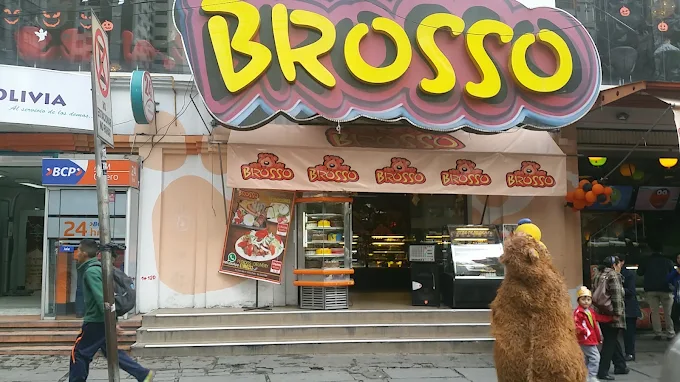
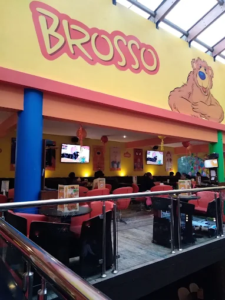
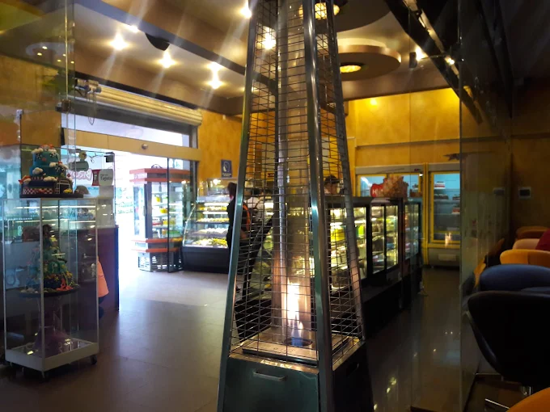
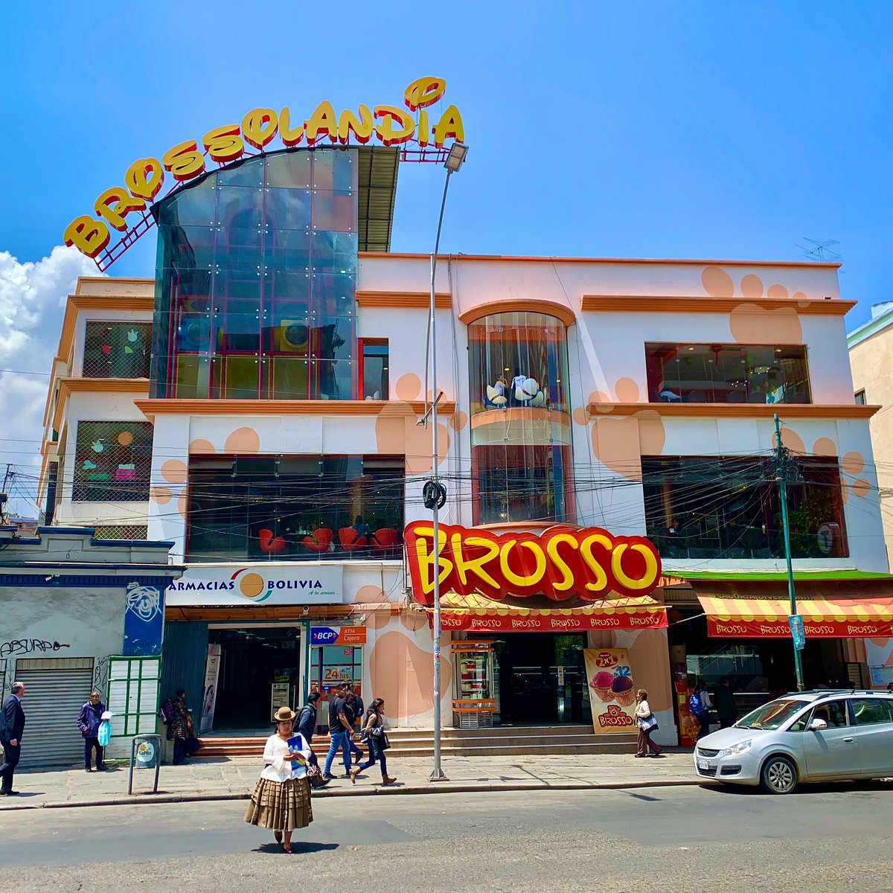
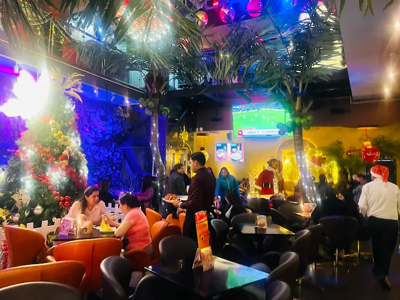

Comprometidos con la calidad, el sabor y la experiencia
Brindar a nuestros clientes una experiencia única a través de productos de alta calidad, combinando sabores tradicionales e innovadores en un ambiente acogedor donde cada visita se convierta en un momento especial para compartir.
Ser reconocidos como una de las mejores heladerías a nivel nacional, destacando por nuestra innovación, calidad y excelencia en el servicio, creando experiencias memorables para nuestros clientes.
Brosso es una reconocida heladería restaurante en la ciudad de La Paz que, a lo largo de los años, se ha convertido en un punto de encuentro para quienes buscan disfrutar de buenos momentos. Desde sus inicios, se ha destacado por ofrecer productos de calidad, un ambiente acogedor y una experiencia diferente que combina tradición e innovación.
Brosso nace en la ciudad de La Paz como una propuesta gastronómica enfocada en ofrecer helados y productos de calidad en un ambiente diferente a lo tradicional. Desde sus inicios, buscó crear un espacio donde las personas puedan disfrutar, compartir y vivir momentos especiales con familia y amigos.

Ubicado en el Paseo de El Prado, una de las zonas más importantes de La Paz, Brosso logró posicionarse como un lugar accesible y atractivo tanto para locales como para turistas. Su ubicación estratégica fue clave para su crecimiento y reconocimiento con el paso del tiempo.
Brosso se destacó desde sus inicios por sus helados artesanales elaborados con ingredientes de alta calidad. Con el tiempo, amplió su oferta incorporando postres, comidas y bebidas, convirtiéndose en una heladería restaurante que ofrece una experiencia completa para todos los gustos.

Más allá de su propuesta gastronómica, Brosso se ha enfocado en brindar una experiencia agradable a sus clientes. Sus espacios modernos, cómodos y su ambiente acogedor lo convierten en un lugar ideal para reuniones, celebraciones y momentos especiales.

A lo largo de los años, Brosso ha evolucionado constantemente, renovando sus instalaciones y adaptándose a las nuevas tendencias gastronómicas. Estas mejoras han permitido mantener su vigencia y seguir atrayendo a nuevos clientes.

Hoy en día, Brosso es considerado un referente en La Paz dentro de su rubro, reconocido por su calidad, servicio y ambiente. Continúa siendo un punto de encuentro para quienes buscan disfrutar de buena comida y momentos agradables.
